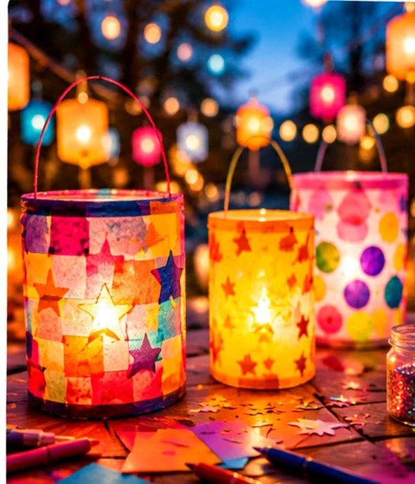

Kieler Lichtermeer · 2026
Kleine Laternen.
Großes Leuchten.
Am 1. November wird der Bernhard-Minetti-Platz zu unserer bunten Erlebniswelt. Kommt vorbei, bastelt eure Laterne und entdeckt, was gemeinsam alles möglich ist.
- Wann
13–18 Uhr · 2026- Wo
- Bernhard-Minetti-Platz
Holtenauer Straße, Kiel

Lichterzauber · Das Motiv zum Event